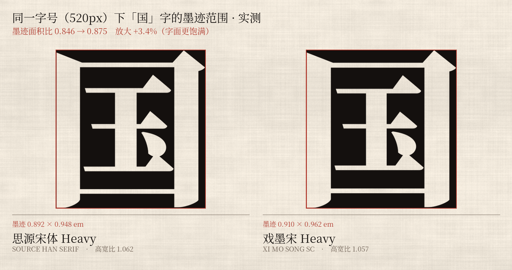
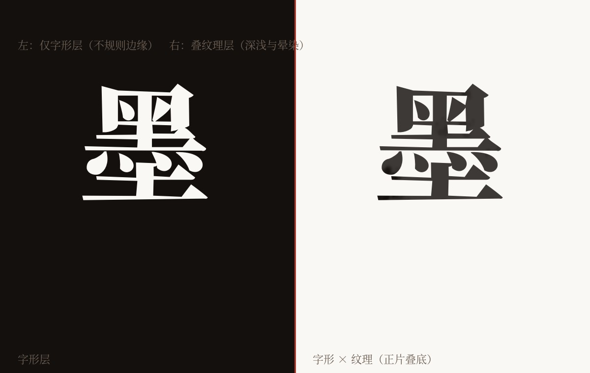
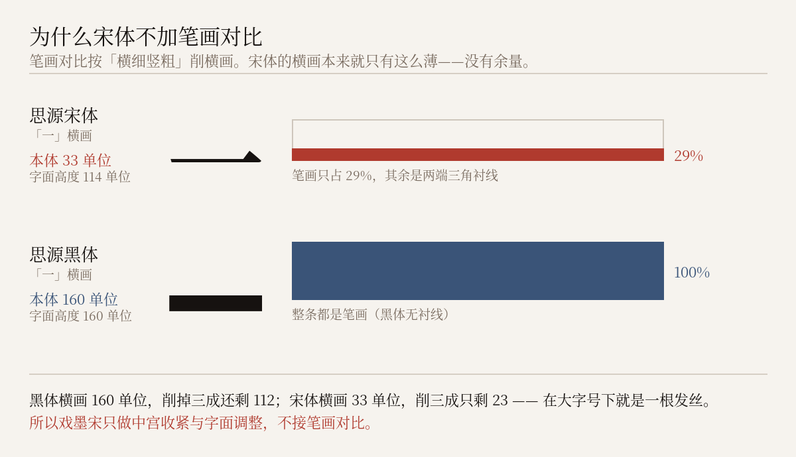

它是什么
WHAT IT IS思源宋体的轮廓早已合并——一个「十」字只有一条闭合轮廓，横竖笔画焊成一体， 因此无法按单条笔画加粗减细。戏墨宋的全部改造，通过全局坐标变形完成。
汉字设计的核心杠杆是中宫。思源宋体同样带日文字体基因，中宫偏松。 戏墨宋把它收紧、把字面放大——中宫更紧、字面更饱满是它唯一的识别特征。
与黑体姊妹款的区别在于少一个旋钮：戏墨黑加笔画对比（横细竖粗）， 戏墨宋不加。原因见卷四——宋体的横画只有 33 单位厚，没有余量可削。

局部缩放率建模，笔画只渐变变细，绝不增粗。
「国」字实测：字面放大，比源字体更饱满。
与 sy=1.045 配合，保持宋体方正偏扁的本性。
六个字重逐字形绘制并重编译，零失败。
四个字重
FOUR WEIGHTS拖动滑块看字面在不同字号下的表现。下面这四行是真正的字体文件，不是图片。
戏墨宋 一蓑烟雨任平生
戏墨宋 一蓑烟雨任平生
戏墨宋 一蓑烟雨任平生
戏墨宋 一蓑烟雨任平生
水墨标题体
INK DISPLAY墨未干
纸上生烟
Xi Mo Song Ink SC · 重 / 浓 两个字重

水墨位移需要足够大的笔画才承受得住。宋体的横画只有 33 单位， 振幅必须由横画而非竖画决定——所以宋体水墨比黑体水墨收敛一档。
逐点局部厚度限幅让粗的竖画仍可接受较大位移，细横画自动受保护。 再加逐字形检测：一旦轮廓翻转就降强度重试。
这是刻意的取舍。再往上加振幅，横画会被水渍啃断， 字形散架——那就不是水墨，是残字。
字体只能编码形状，不能编码色调
水渍那圈深浅不匀的渍痕，是墨水浓度在纸纤维上干燥后的渐变——属于栅格信息。 OpenType 的轮廓里没有灰阶。
所以完整的水墨效果需要两层：字形层提供不规则的边缘， 纹理层（PNG，正片叠底）提供深浅与晕染。
为什么宋体不加笔画对比
WHY NO CONTRAST戏墨黑用了两个旋钮：中宫收紧加方向性笔画对比。 黑体是等线，横竖一样粗，加对比是纯增益。
宋体不行。宋体本就靠横细竖粗立骨，横画已经被传统削到很薄—— 没有余量再削第二次。
实测：思源宋体 Regular 的「一」字，横画本体只有 33 单位厚， 而两端三角衬线把它撑到 114 单位高。作为对照，思源黑体的「一」字整条就是笔画， 160 单位。
黑体横画削掉三成还剩 112；宋体横画削三成只剩 23 —— 在大字号下就是一根发丝，印刷上直接断线。

曾经做错过
实验台里保留了这个反面候选：宋_加对比_错。
给它接上笔画对比后，横画被削成发丝，字面结构直接塌掉。
这条记录留在源码里，是为了让后来的人不必再试一次。
所以戏墨宋只有一件事可做：中宫收紧 + 字面调整。 两个旋钮共用黑体那套变形引擎，只是不接第三个。
这也让它与戏墨黑构成一对方法相同、取舍不同的姊妹字体。
竖排
VERTICAL SETTING竹杖芒鞋轻胜马
定风波 · 苏轼
莫听穿林打叶声，何妨吟啸且徐行。竹杖芒鞋轻胜马，谁怕？一蓑烟雨任平生。
试写
TYPE TESTER戏墨宋 免费商用 四字重
正在按需载入 GB2312 完整字库（约 2.5 MB）——载入前显示的是页面子集。
规格与授权
SPECS & LICENSE| 字形总数 | 31,058 / 字重 |
|---|---|
| cmap 字符 | 30,930 |
| 基本区汉字 | 20,992（含扩展 A 区） |
| 拉丁 / 注音 / 假名 / 谚文 | 全套 |
| 桌面格式 | OTF（CFF），约 11.4 MB / 字重 |
| 网页格式 | WOFF2，GB2312 子集 7,690 字符，约 2.5 MB |
| 竖排 | vhea / vmtx 完整保留 |
| 授权 | SIL Open Font License 1.1 |
你可以 / 不可以
- 免费用于任何场景，包括商业用途
- 自由分发、嵌入、修改
- 修改后分发（衍生字体须同样以 OFL 发布并改名）
- 单独售卖字体文件本身
- 在衍生字体中使用保留字体名
- 以 Adobe 名义做宣传背书
保留字体名：Xi Mo Song · Xi Mo Song SC ·
戏墨宋 · 戏墨宋 SC，以及各自的 Ink 变体名。